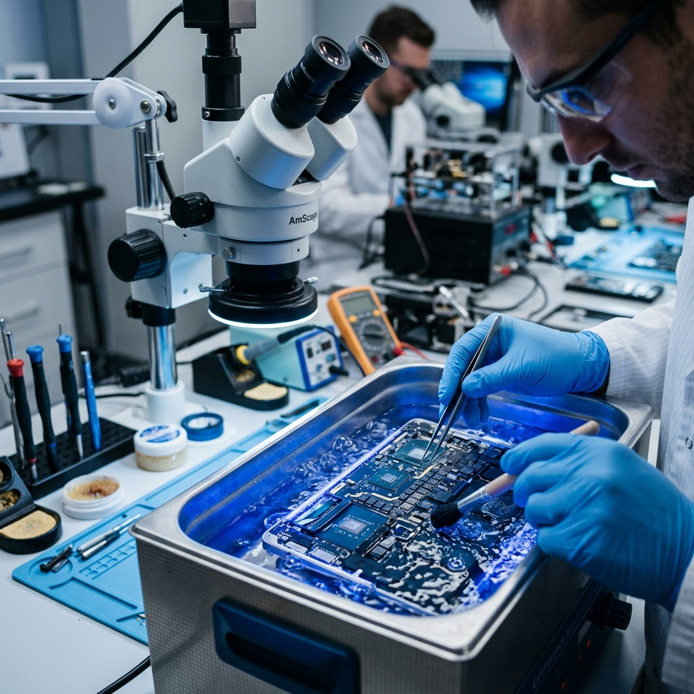

Se te cayó el café
encima de tu Mac.
Ya no enciende.
Es el peor momento. Años de trabajo, fotos, proyectos — todo en riesgo. Y el tiempo corre: cada minuto que pasa, la corrosión avanza dentro de tu tarjeta lógica.
La rescatamos.
Limpieza ultrasónica + reparación nivel componente.
No somos un place donde "la metes a arroz". Tenemos el equipo y la experiencia para hacer lo que pocas personas en México pueden: saltar directo a la tarjeta lógica y reparar lo que el líquido dañó.

Recepción con diagnóstico inmediato
Desde que llega tu Mac, la revisamos en menos de 2 horas. Te decimos exactamente qué dañó el líquido y cuánto cuesta el rescate — sin sorpresas.
Limpieza ultrasónica profesional
Desmontamos la tarjeta lógica completamente y la limpiamos en nuestra máquina de limpieza ultrasónica con solución especializada. Eliminamos cada traza de corrosión.
Reparación a nivel componente con microsoldadura
Identificamos cada componente dañado bajo microscopio y lo reemplazamos. Chips, condensadores, conectores — reparamos lo que otros dan por perdido.
Prueba completa y garantía
Antes de entregarte tu Mac, hacemos pruebas exhaustivas en todos los componentes. Entregamos con garantía por escrito del trabajo realizado.
A diferencia de los centros de servicio comunes que sólo liman la corrosión visible con un pincel y cruzan los dedos, en macWave hacemos una reparación real a nivel de componente electrónico. Eso significa que si un microprocesador, condensador o conector se dañó por el líquido, lo reemplazamos — con microsoldadura avanzada.
¿Tu Mac se mojó?
No la enciendas. No la metas a arroz. Escríbenos ahora — cada minuto importa. Coordinamos recolección de emergencia en toda la CDMX.
Escribir ahora — Recolección urgente disponible📍 Cobertura: toda la CDMX y Estado de México